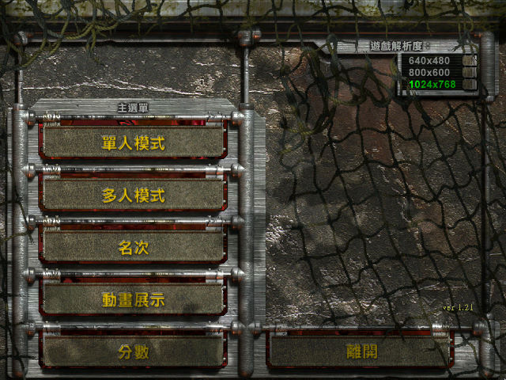
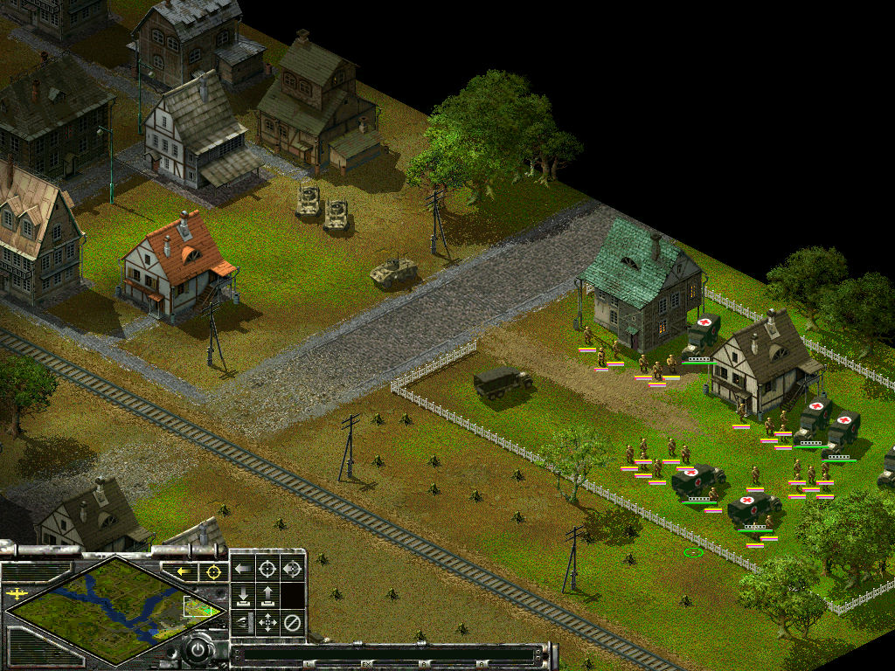

名稱：裝甲騎兵1／突襲1 (Sudden Strike，中文版)
簡介：Fireglow 2000年出品的即時戰術遊戲，由CDV代理發行，同年推出「緊急任務（Additional
Missions）」資料片，2001年推出「不朽功勳／永遠的突襲（Sudden Strike Forever）」
資料片，台灣由大宇中文化並代理發行 [待補]。


保護：主程式為光碟Codelock，不朽功勳資料片為光碟SafeDisc 2.51
備註：繁中版主程式為1.2版，安裝完「不朽功勳」為1.21版。
檔案：patch.rar = 繁中版更新檔（內含中文版更新檔、文字檔更新檔）
nocd12a.rar = 主程式1.2a免光碟檔（放入光碟才有背景音樂）
nocd121.rar = 資料片1.21免光碟檔（放入光碟才有背景音樂）